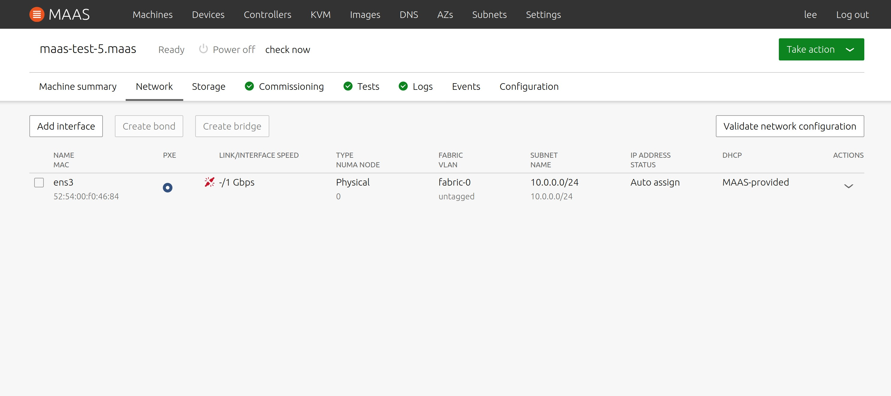
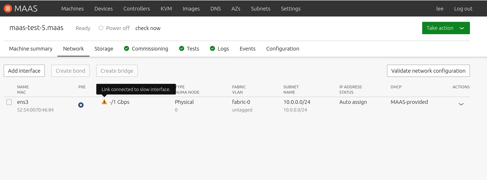
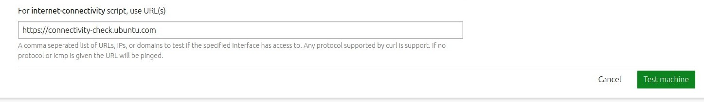
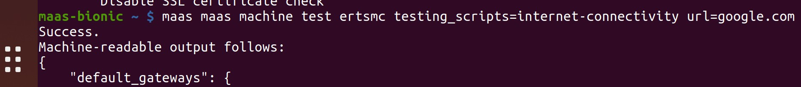
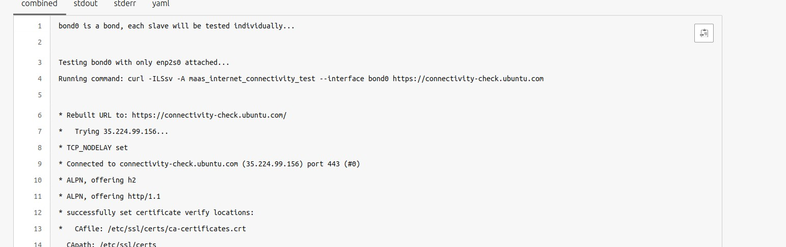

Network testing
MAAS provides a comprehensive suite of network and link testing capabilities. MAAS can check whether or not links are connected, detect slow links, and report link and interface speeds via UI or API. In addition, you can test Internet connectivity against a user-provided list of URLs or IP addresses. Bonded NICS will be separated during this testing, so that each side of a redundant interface is fully evaluated.
Network testing also includes customisable network testing and commissioning scripts. There are no particular restrictions on these scripts, allowing you to test a wide variety of possible conditions and situations.
Quick questions you may have:
- How do I use network link testing?
- How can I detect slow network links?
- How do I use network validation and testing scripts?
- How can I customise network testing?
Network link testing
MAAS can check whether links are connected or disconnected, so that you can detect unplugged cables. If you are not running MAAS 2.7, you must first upgrade and then recommission your machines to find disconnected links. MAAS not only reports unplugged cables, but also gives a warning when trying to configure a disconnected interface. In addition, administrators can change the cable connection status through both API and UI after manually resolving the issue.
When MAAS detects a broken network link, users will see a screen similar to this one:
>
If you’re already using a version of MAAS less than 2.7, you will want to upgrade and recommission your existing machines to check link status. Note that you will also receive a warning from MAAS when trying to configure a disconnected interface. Once you have manually repaired the broken connection, an administrator can change cable connection status:
 >
>
Detect slow network links
As servers and hardware get faster, the chances increase that you might encounter a speed mismatch when connecting your NIC to a network device. MAAS can warn you if your interface is connected to a link slower than what the interface supports, by automatically detecting link and interface speed and reporting them via the UI:
>
This information is also available via the API. Depending on your physical hardware, the problem may not be repairable, but once you identify a slow link, you can replace a slow switch without recommissioning.
Administrators can change or update the link and interface speeds via the API after manual changes to the connection. Users can filter and list machines by their link speed, and can also employ this information to allocate machines by their link speed in the API.
Network validation and testing scripts
MAAS allows you to configure network connectivity testing in a number of ways. If MAAS can’t connect to the rack controller, deployment can’t complete. MAAS can check connectivity to the rack controller and warn you if there’s no link, long before you have to try and debug it. For example, if you can’t connect to your gateway controller, traffic can’t leave your network. MAAS can check this link and recognize that there’s no connectivity, which alleviates hard-to-detect network issues:
 >
>
Users can now test their network configuration to check for:
- Interfaces which have a broken network configuration
- Bonds that are not fully operational
- Broken gateways, rack controllers, and Internet links
In addition, MAAS can comprehensively test Internet connectivity testing. You can give a list of URLs or IP addresses to check, either from the network testing screen:
>
or via the API:
>
In the ephemeral environment, standard DHCP is still applied, but when network testing runs, MAAS can apply your specific configuration for the duration of the test. While all URLs / IPs are tested with all interfaces, MAAS can test each of your interfaces individually, including breaking apart bonded NICS and testing each side of your redundant interfaces:
>
You can also run different tests on each pass, e.g., a different set of URLs, although each run would be a different testing cycle.
For testing individual interfaces, you can use the API, for example:
 >
>
Note that in this command, we are testing internet connectivity to the single interface “br0.”
Customise network testing
MAAS allow you to customise network testing according to your needs. You can create your own commissioning scripts and tests related to networking, and you can run them during the network testing portion of the MAAS workflow:
 >
>
There are no particular restrictions on these scripts, so you can test a wide variety of possible conditions and situations. Administrators can upload network tests and test scripts. Administrators can also create tests which accept an interface parameter, or scripts which apply custom network configurations.
Users can specify unique parameters using the API, override machines which fail network testing (allowing their use), and suppress individual failed network tests. Users can also review the health status from all interface tests, even sorting them by interface name and MAC. In addition, MAAS can report the overall status of all interfaces via the API, the UI Machine list, and the UI Interfaces tab.